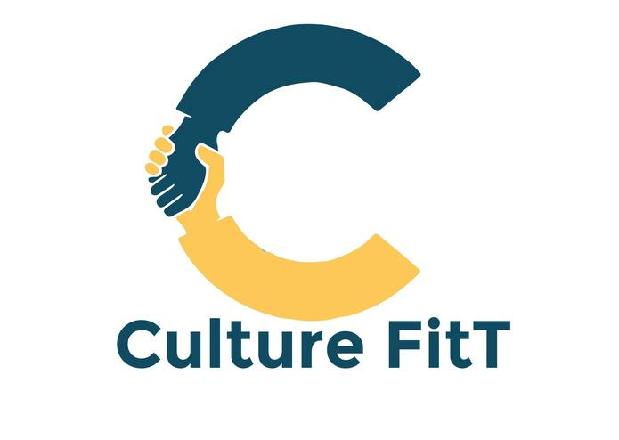
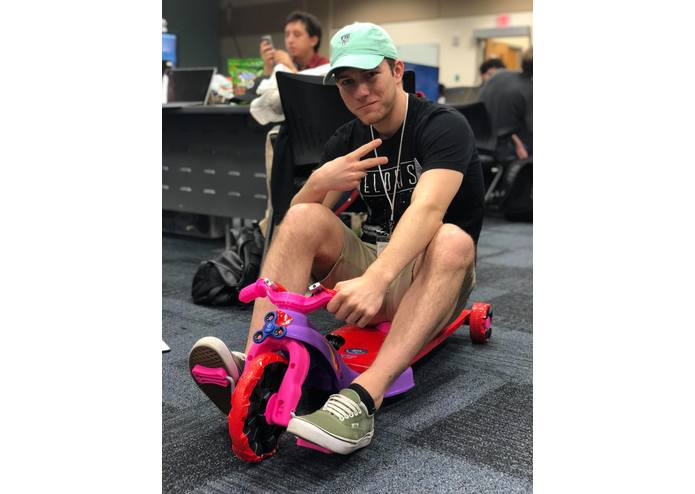

Projects

Codenames DQN
- Created an OpenAI Gym environment of the boardgame Codenames to simulate the game play utilizing GloVe word vectors
- Trained a Deep Q-network with the goal of creating a model that can play and win the boardgame, consequently learning the multi-modal definitions of English words
Neural Gonna Give You Up
- Developed encoder-decoder neural network to process MIDI song files to make them sound more like Never Gonna Give You Up by Rick Astley. This project was awarded Best Artificial Intelligence and Machine Learning Hack at UHack 2017
Rock Paper Scissors
- Built and trained a deep learning, image recognition model in MATLAB to determine if one is displaying rock, paper, or scissors in real time using transfer learning techniques
Web Page Archiving and Content Analysis Tool
- Created a desktop application that allows users to download large batches of websites into a custom, compressed file format which allows for easy programmatic access and extracts the metadata and main content of downloaded articles using Natural Language Processing. In collaboration with MIT Lincoln Lab

Culture FitT
- Web application created as a recruitment analysis tool. It analyzes tweets from users in order to see if they'd be a good fit of a certain culture. I helped create the backend. I used the Twitter API and Node.js for my part of this project. In addition, I used child processes to run data analysis in R. This project was recognized as top 10 projects at MLH Prime 2016
ROAM
- An artificial reality game, Game description can be found in GitHub README. For my part, I wrote a Python microservice in order to retrieve and style a map obtained from the Google Static Maps API. In addition, I did some basic math in order to make a function that allows me to return adjacent areas to that original map so that there is a seamless transition from one map to another. This project won 2nd place at MIA Game Jam in 2016
Night Watch
- This project uses EMG and temperature sensors in order to detect muscle movement and breathing. The purpose was for people with disorders to be able to have monitoring as they sleep. I made the mobile application that people could use in order to interface with the data collected by the sensors using React Native and MaterialUI. This project won 2nd place and Best Social Good Hack at MangoHacks 2017

Internet of Trikes
- The smartest tricycle. Alexa integration, augmented reality, image processing, headlights, speakers. Created at MangoHacks 2018